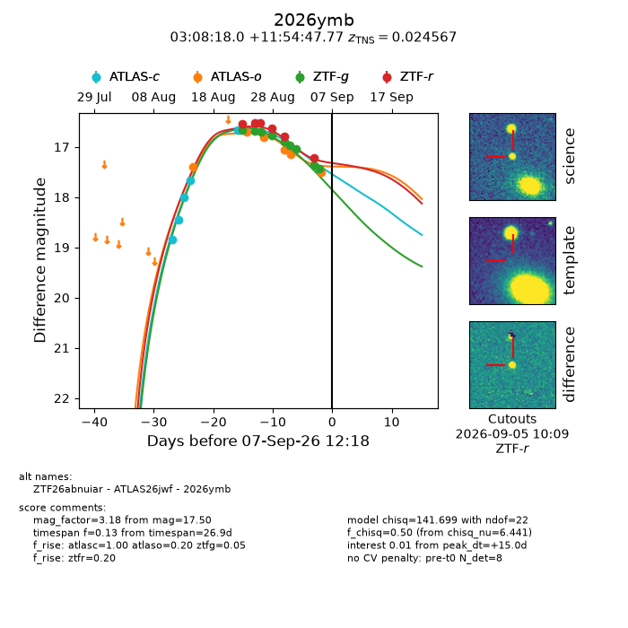
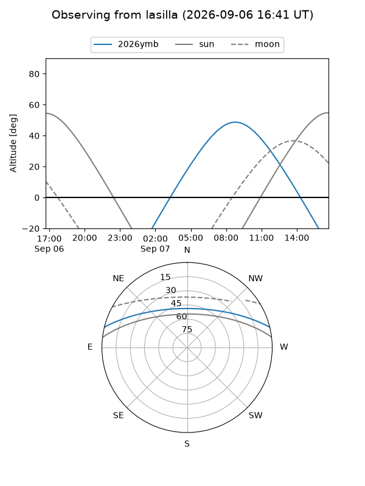
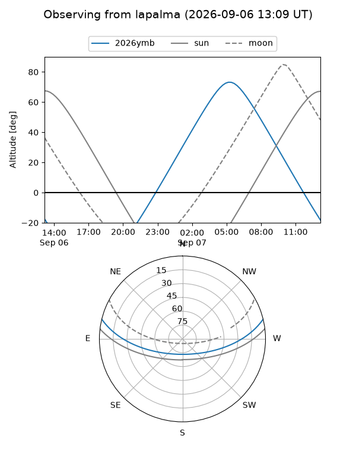
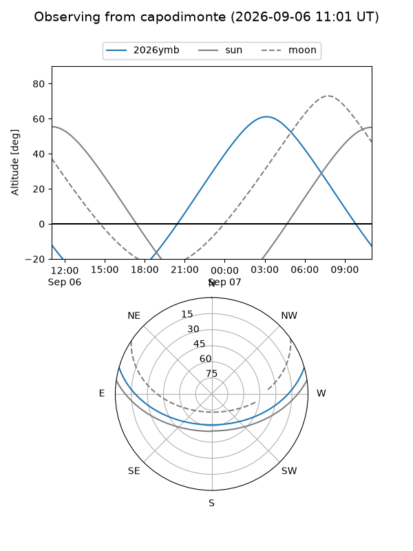
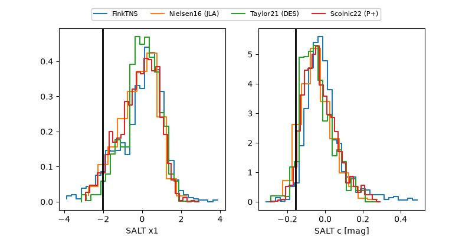

2026ymb
Target 2026ymb at 2026-09-07 12:20
Aliases and brokers:
FINK-ZTF: ztf.fink-portal.org/ZTF26abnuiar
Lasair-ZTF: lasair-ztf.lsst.ac.uk/objects/ZTF26abnuiar
ALeRCE-ZTF: alerce.online/object/ZTF26abnuiar
YSE-PZ: ziggy.ucolick.org/yse/transient_detail/2026ymb
TNS name: wis-tns.org/object/2026ymb
Direct TNS query: direct search
alt names
ZTF26abnuiar (ztf,fink_ztf)
2026ymb (tns,yse)
ATLAS26jwf (atlas)
Coordinates:
equatorial (ra, dec) = 47.0750,+11.91327
equatorial (HMS+DMS) = 03:08:18.00,+11:54:47.77
galactic (l, b) = (167.8036,-38.75384)
Flags:
TNS type: SN Ia
TNS redshift: 0.0246
peak dt: +15.0
Photometry:
last atlasc=16.66, atlaso=17.50, ztfg=17.43, ztfr=17.23
5 atlasc, 6 atlaso, 9 ztfg, 6 ztfr detections
Lightcurve

Visibility



Additional plots
